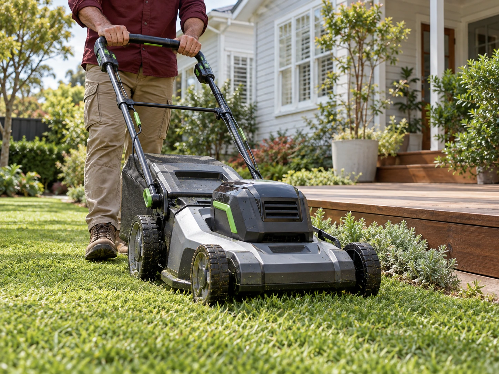
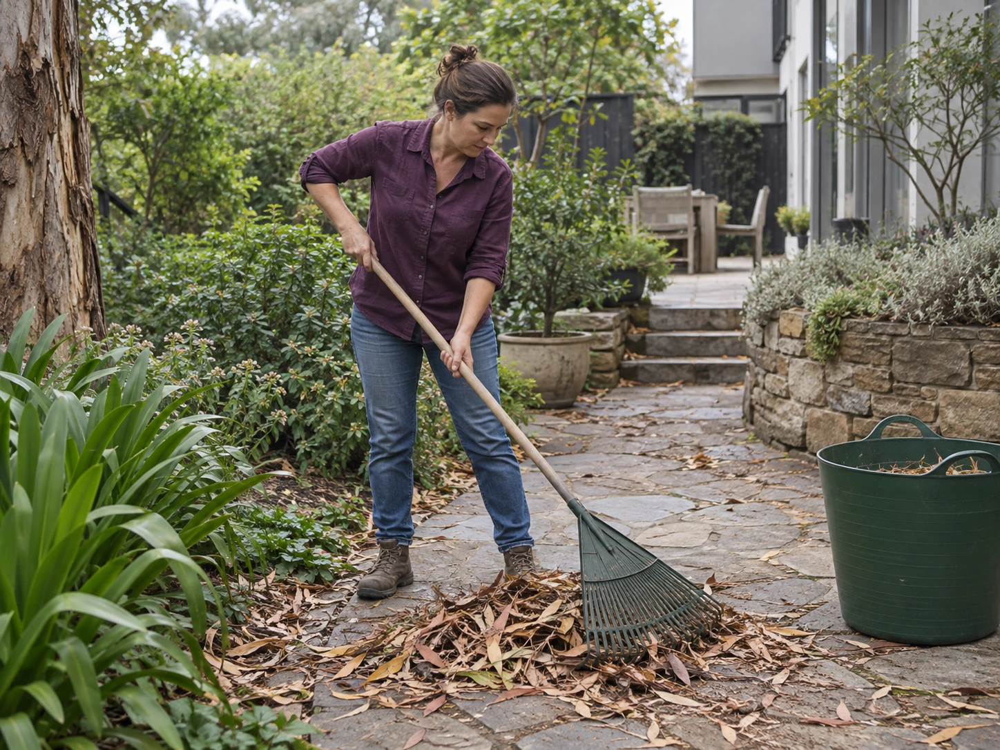
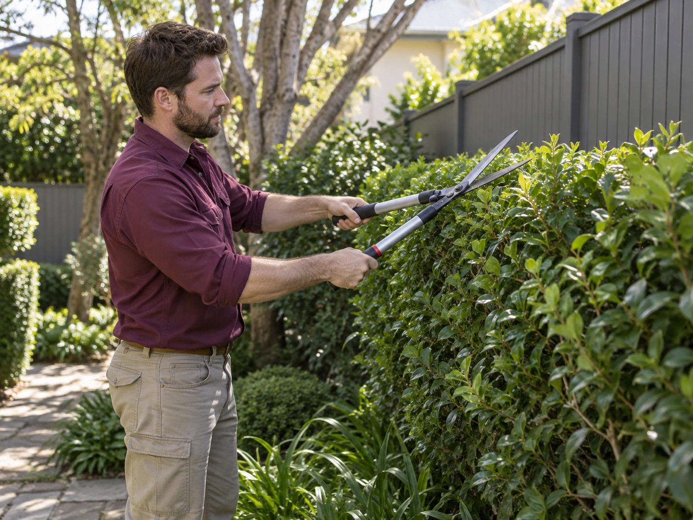
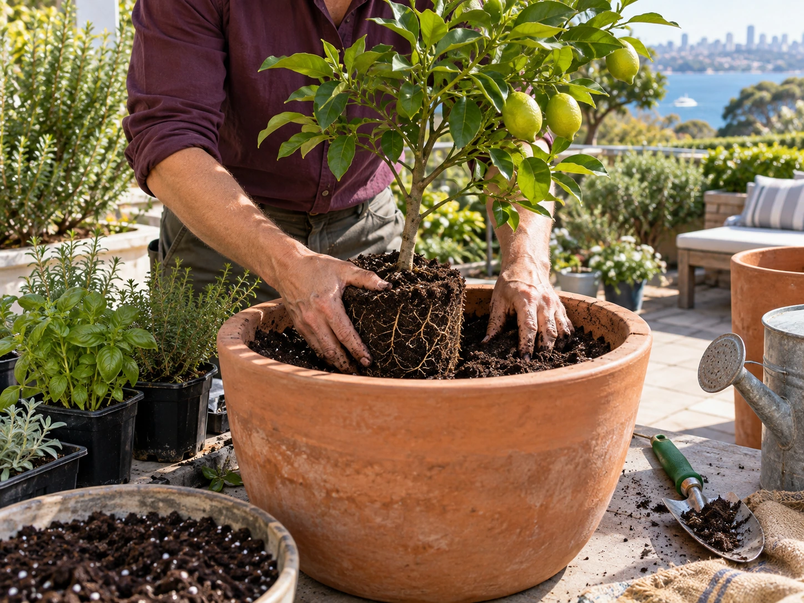
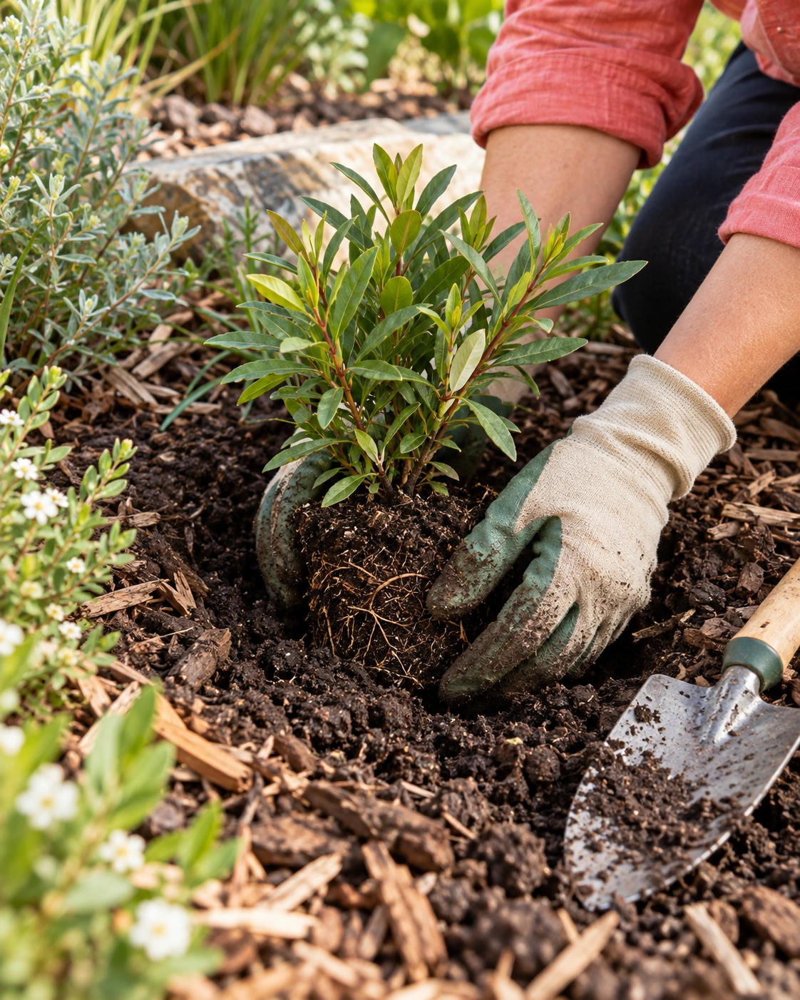
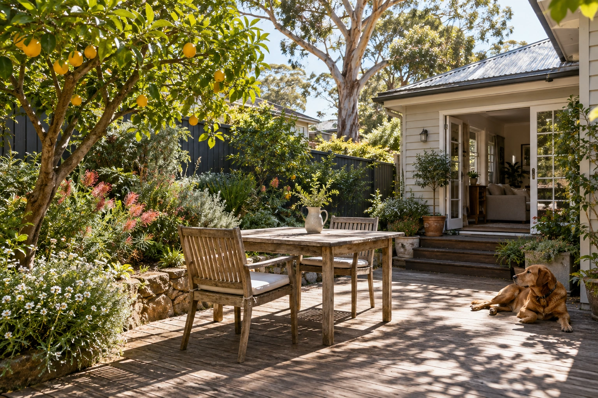

FOR THE LOVE OF YOUR LITTLE PATCH. LANE COVE, SYDNEY
MAKE ROOMFOR OUTSIDE. WE MOW. WE PRUNE. WE PLANT. YOU ENJOY.
THE CARE MENU
WHAT’S YOURASKING FOR? Some gardens need a regular rhythm.

01 / LAWN & REGULAR CARE Keep it ticking. Explore regular care ↘ 
02 / SEASONAL TIDY-UPS Give it a reset. Explore garden tidy-ups ↘ 
03 / PRUNING & HEDGES Cut it back. Explore pruning ↘ 
04 / PLANTING & MULCHING Bring it to life. Explore planting ↘ 01 / REGULAR GARDEN CARE The quiet work Mowing, edging, weeding and the little jobs that build up between weekends. A care routine shaped around your garden, not a one-size-fits-all checklist.
Lawn mowing & neat edges Garden beds kept in check Seasonal jobs planned ahead That sounds like my garden ↗ 02 / SEASONAL TIDY-UPS Find the garden When the weeds have had a head start, a considered tidy-up helps you see your space again. We’ll discuss the priorities and agree on what belongs in the first visit.
Weeding & leaf clearing Garden-bed tidy-ups Green-waste arrangements agreed My garden needs a reset ↗ 03 / PRUNING & HEDGES A bit less wild. Bring back the path, open up an overgrown corner and give shrubs the attention they need. Careful trimming with the plant, its growth and the season in mind.
Hedge trimming & shaping Shrub pruning Clearer edges & pathways Let’s cut it back ↗ 04 / PLANTING & MULCHING Something small. A fresh bed, a welcoming entry or a corner with a little more life. We’ll talk through your light, soil and the amount of upkeep that suits you.
Garden-bed preparation Fresh planting Mulch & finishing touches I’ve got a planting idea ↗ 
HANDS IN THE SOIL. HEAD IN THE DETAILS. THE YARDFOLK WAY
A GARDEN SHOULDLIFE. Not the other way around.
Maybe yours is a place for a morning cuppa. Maybe it’s where the dog finds the sun, the herbs grow, or friends end up on Sunday.
We start with how you use it. Then we work out the care that keeps it feeling like your place—without making the garden your second job.
CARE STARTS WITH A CONVERSATION. Your space. A shared plan. 
ROOM FOR REAL LIFE. NO TWO PATCHES ARE THE SAME
A LITTLE The right help can be a single visit, a seasonal reset or a familiar face who keeps things ticking over.
ONE-OFF SEASONAL REGULAR
Find a rhythm that fits ↗ NOTHING COMPLICATED
FROM YOURHELLO. 01 Tell us the story. What’s working, what’s getting away from you, and what would make the space easier to enjoy?
02 Agree on the good stuff. We’ll talk through the work, timing, access and waste handling before a visit goes ahead.
03 Get back out there. Leave the agreed jobs with us, then decide whether a regular routine would suit your garden.
A LOCAL KIND OF GARDEN CARE
Sydney’s leafy corners.
HELLO, LANE COVE. Garden care for Lane Cove and neighbouring Sydney suburbs. Tell us where your little patch is.
Lane Cove Lane Cove North Riverview Greenwich
BEFORE WE GET OUR HANDS DIRTY
A FEWQUESTIONS. Is my garden too small? Courtyards, small beds and compact outdoor spaces are welcome. Tell us what you have and what needs attention so we can discuss the work.
Can you help just once? Yes. A one-off visit can be a good way to catch up on jobs or get ready for a new season. We’ll agree on the scope before getting started.
How often would my garden need care? It depends on the planting, lawn, season and how you like to use the space. We can talk through a routine that suits those needs.
What happens to the clippings? Let us know about your green-bin space or composting arrangements. Waste handling can then be discussed as part of the agreed work.
NO PERFECT GARDEN REQUIRED.
LET’S STARTYOURS.